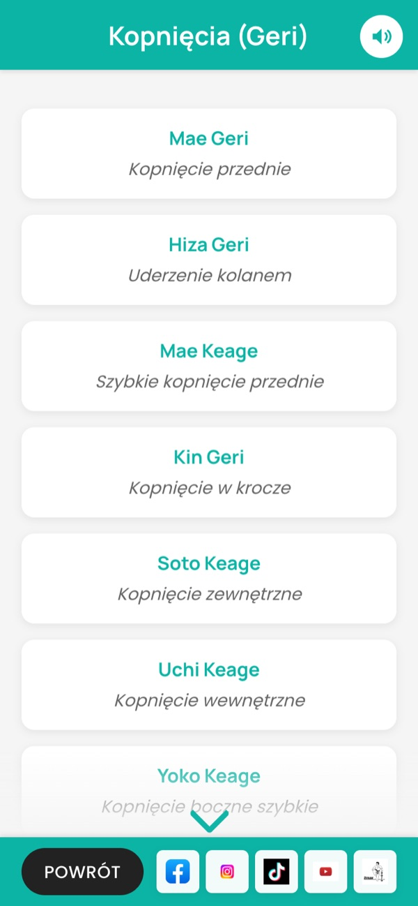

一 ichi · Techniki
67 technik rozłożonych na ruchy
Kopnięcia, ciosy, uderzenia, bloki i postawy. Każda technika ma japońską nazwę, polski opis i zdjęcia kolejnych faz ruchu ze strzałkami – zdjęcie powiększysz palcem.
- Geri
- Tsuki
- Uchi
- Uke
- Dachi
